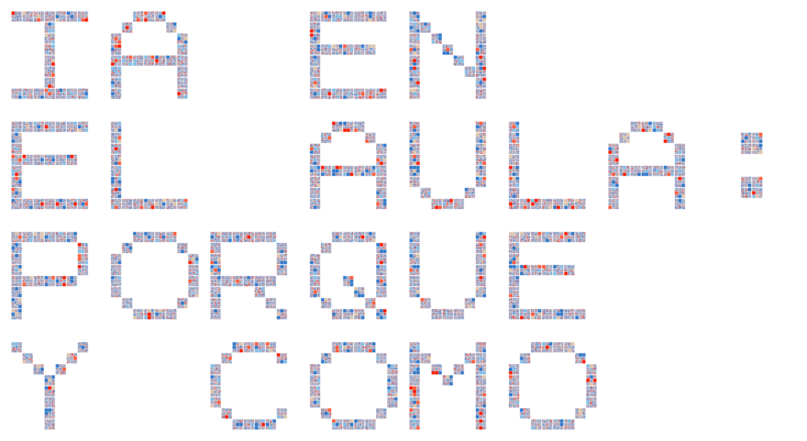

Por qué y cómo desarrollar herramientas para transformar el aprendizaje
-
Modelo A.C.T.I.V.O. ↗
Andres
Presentación interactiva 16:9 sobre neurociencia del aprendizaje: ocho pasos cronometrados, sincronización en vivo y vista para celular.
-
Agustín ayuda a Pororo
Josefa
Juego de conteo del 1 al 10: hay que tocar los bloques en orden para levantar el iglú del pingüino, con refuerzo al acertar y sacudida al equivocarse.
-
Arcade Emprendedor
Paola
Tres dinámicas de aula con generadores al azar: dilemas éticos, roleplay de venta de un objeto inútil y un juicio a la innovación.
-
Crafting Mi Día
Stefany
Planificador de las 24 horas con estética de inventario pixelado, gráfico circular en vivo y alertas de equilibrio.